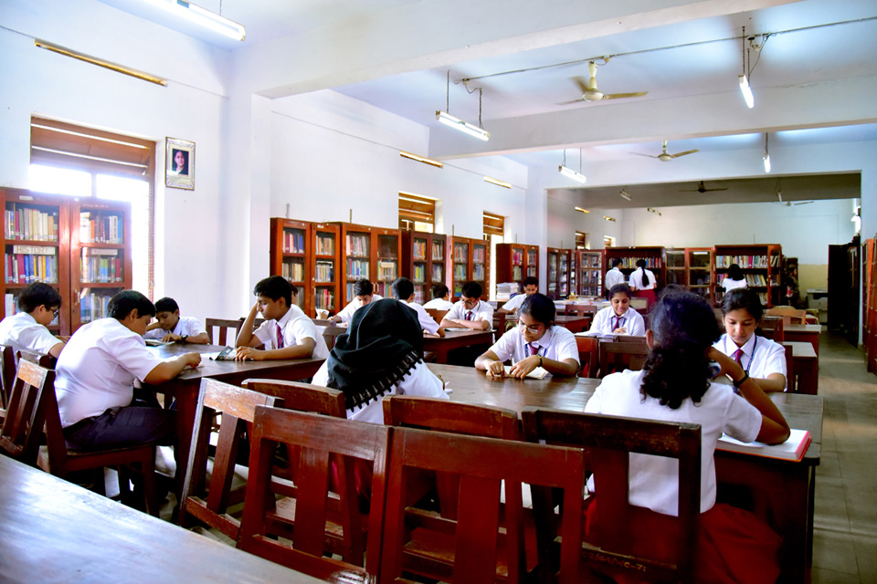
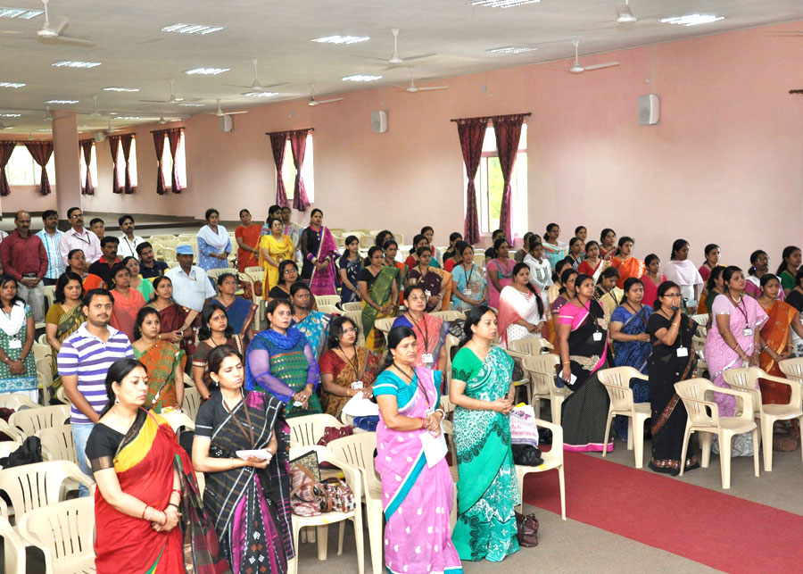

School Library
It was made by the end of December 1972
A library is just a place where a lot of books are stacked for reading. Every school, college, and the university has its library. There are all types of books, including science, literature, famous personalities, economics, commerce, etc. Students love to visit the library and read books.

School Auditorium
It was made by the end of December 1972
School auditorium is the place where our assembly or annual functions are done. Leaving this we can also practice for stage confidence